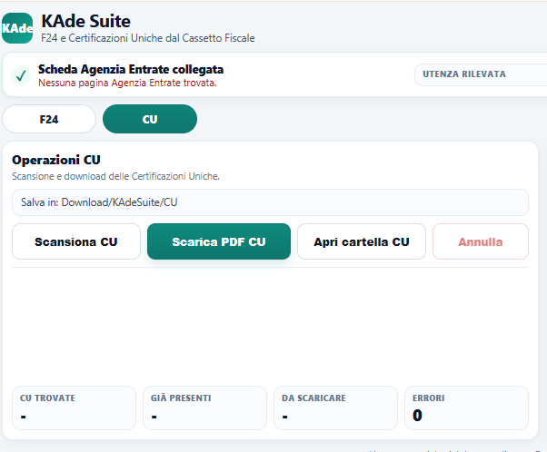
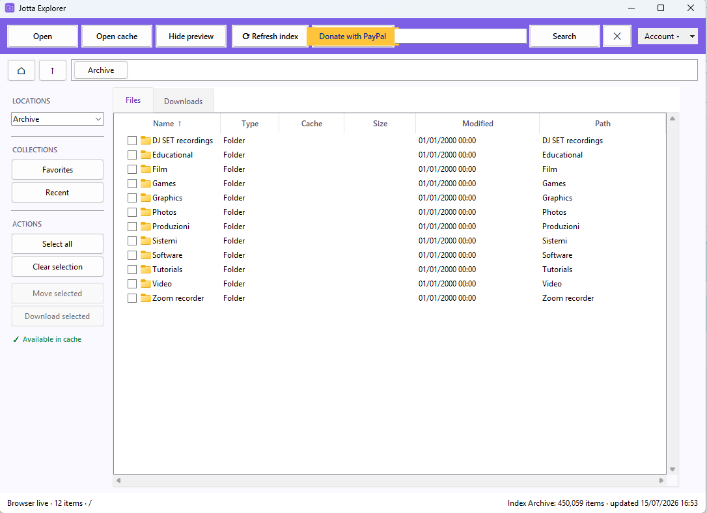

Chrome Extension
KAde Suite
Download massivo di F24 in PDF e Certificazioni Uniche dal Cassetto Fiscale, con rinomina automatica, unione dei PDF e salvataggio locale ordinato.
Una raccolta di strumenti progettati per ridurre attività ripetitive, organizzare meglio i documenti e rendere più semplice il lavoro quotidiano.
Per il momento il catalogo comprende KAde Suite e Jotta Explorer. Nuovi strumenti potranno essere aggiunti mantenendo la stessa struttura.

Download massivo di F24 in PDF e Certificazioni Uniche dal Cassetto Fiscale, con rinomina automatica, unione dei PDF e salvataggio locale ordinato.

Browser desktop per esplorare, cercare e aprire i file presenti su Jottacloud, con navigazione live, indice locale e accesso rapido alle cartelle.